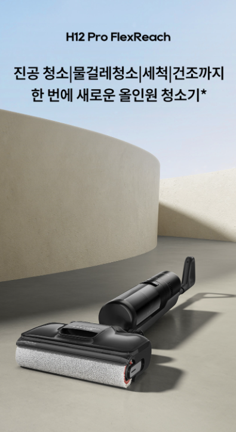
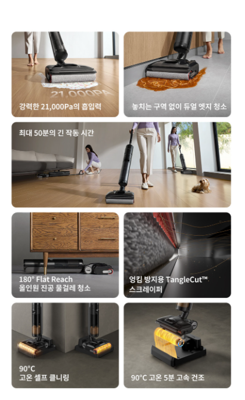

1. 드리미 무선 자동 물걸레청소기은 어떤 제품일까?
바닥의 마른 먼지와 젖은 오염을 흡입하면서 롤러 물걸레로 닦아주는 무선 습건식 청소기입니다. 제품명만 보고 주문하기보다 사용할 공간과 바닥 환경, 정확한 구성품과 관리 방법을 함께 확인하는 것이 중요합니다.
2. 습건식 청소 구조와 활용 범위
드리미 무선 자동 물걸레청소기는 바닥에 떨어진 먼지와 머리카락을 흡입하면서 젖은 자국과 생활 얼룩을 롤러로 닦는 방식의 제품입니다. 일반 무선청소기로 먼지를 제거한 뒤 별도로 물걸레질하는 과정을 줄일 수 있어 주방, 거실과 식탁 주변을 자주 관리하는 가정에서 활용하기 좋습니다. 다만 카펫이나 물에 약한 바닥재에는 사용이 제한될 수 있으므로 바닥 종류에 맞는 모드를 확인해야 합니다.

3. 롤러 세척과 건조 관리
자동 세척 기능은 사용 후 롤러에 남은 먼지와 오염을 스테이션에서 씻어주는 데 도움을 줍니다. 세척 기능이 있어도 오수통과 필터, 롤러 주변의 이물질은 정기적으로 직접 확인해야 하며, 롤러가 충분히 건조되지 않으면 냄새가 날 수 있습니다. 온풍 건조나 자연 건조 방식 등 정확한 관리 구조는 판매 페이지에서 확인하는 것이 좋습니다.
4. 정수통과 오수통 사용법
습건식 청소기는 깨끗한 물을 담는 정수통과 오염된 물을 모으는 오수통이 분리되어 있습니다. 청소 전에는 정수통에 권장량의 물을 넣고, 청소 후에는 오수통을 바로 비워 세척하는 것이 위생적인 사용에 도움이 됩니다. 제조사가 허용하지 않은 세제나 거품이 많은 세제를 넣으면 내부 막힘과 거품 넘침이 발생할 수 있으므로 전용 세제 사용 여부를 확인하세요.

5. 가구 아래와 모서리 청소
손잡이 각도와 헤드 높이, 가장자리 밀착 구조는 실제 청소 범위에 영향을 줍니다. 침대와 소파 아래에 충분히 들어가는지, 벽면과 가구 모서리에 롤러가 얼마나 가까이 닿는지 살펴보세요. 본체가 무거워도 전진 보조 기능이 있으면 평지에서 밀기 쉬울 수 있지만 방향 전환과 계단 이동 시에는 무게가 그대로 느껴질 수 있습니다.
6. 배터리와 보관 공간
실제 사용시간은 선택한 모드와 물 분사량, 롤러 구동 상태에 따라 달라질 수 있습니다. 집 전체를 한 번에 청소하려면 일반 모드 기준 사용시간을 확인하고, 충전 스테이션을 놓을 평평한 공간과 전원 콘센트 위치도 미리 정하는 것이 좋습니다.
7. 구매 전 체크리스트
- 판매 페이지의 정확한 모델명과 색상을 확인합니다.
- 사용할 바닥과 공간에 맞는 제품인지 확인합니다.
- 기본 구성품과 별도 구매 소모품을 확인합니다.
- 배터리 사용시간과 충전·거치 방식을 확인합니다.
- 물통, 먼지통, 필터와 롤러 관리 방법을 확인합니다.
- 세척과 건조 기능의 작동 범위를 확인합니다.
- 배송, 교환, 반품과 보증 조건을 확인합니다.
싸게살래 가전·디지털 목록에서 무선청소기와 로봇청소기 등 다양한 구매 가이드를 확인할 수 있습니다.
가전·디지털 전체 상품 보기 →자주 묻는 질문
구매 전에 가장 먼저 확인할 것은 무엇인가요?
정확한 모델명과 핵심 기능, 기본 구성품, 설치·보관 공간과 소모품 비용을 먼저 확인하는 것이 좋습니다.
자동 세척 기능이 있으면 직접 청소하지 않아도 되나요?
자동 세척은 롤러나 내부 통로 관리에 도움을 주지만 물통, 필터, 세척 트레이와 이물질은 정기적으로 직접 관리해야 합니다.
표시된 최대 사용시간만 보면 되나요?
최대 사용시간은 특정 모드를 기준으로 표시될 수 있습니다. 실제 사용시간은 흡입 단계, 물 분사와 브러시 구동 여부에 따라 달라질 수 있습니다.
일반 세제를 넣어도 되나요?
일반 세제는 거품과 내부 막힘을 유발할 수 있으므로 제조사가 허용한 전용 세제나 권장 방법을 따라야 합니다.